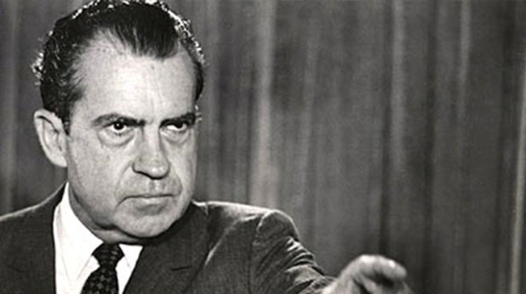
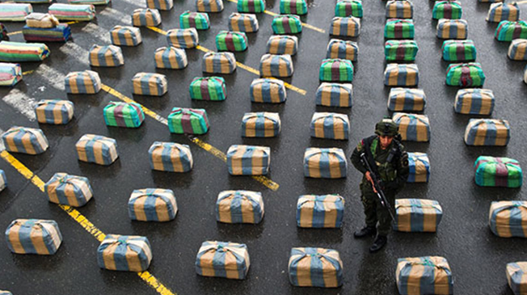
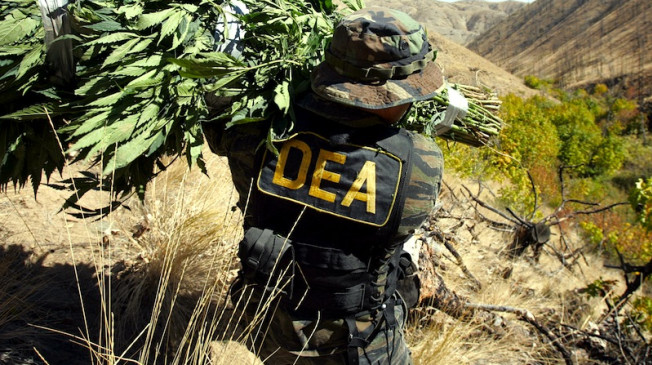

Facts
Drug War Statistics

-
37th USA President Richard Milhous Nixon had coined the term "War On Drugs".
In June 1971 Richard Nixon had declared "War on Drugs", dramatically increased the size and presence of federal drug control agencies (The FDA)
Richard Nixon declared "drug abuse" to be a "public enemy" which helped implement the "Comprehensive Drug Abuse Prevention and Control Act of 1970" strengthening and continuing the drug prohibition polices in the U.S
Richard Nixon made up a list of his political ‘enemies’ when he was president. He obsessed over pot-smoking hippies, popular musicians and artists who work or audience was not to his taste.
Fun Fact: Richard Nixon was an avid bowler

-
The amount spent annually in the U.S. on the war on drugs: More than $51,000,000,000 which in result over the past four decades has racked up over $1 Trillion into drug war spending, relying on taxpayers to foot the bill.
Number of arrests in 2014 in the U.S. for drug law violations: 1,561,231. The Number of these arrests that were for possession only: 1,297,384 (83 percent)
-
Number of states that have approved legally taxing and regulating marijuana: 4 (Alaska, Colorado, Oregon and Washington)
-
Proportion of people incarcerated for a drug offense in state prison who are black or Latino, although these groups use and sell drugs at similar rates as whites: 57 percent

-
Roughly 750,000 people are arrested for marijuana each year, the vast majority of them for simple possession, with racial minorities over-represented
Number of Americans incarcerated in 2014 in federal, state and local prisons and jails: 2,224,400 or 1 in every 111 adults.
-
Number of people killed in Mexico's drug war since 2006: 100,000+
-
Estimated annual revenue that California would raise if it taxed and regulated the sale of marijuana: $1,400,000,000
History
A Brief History and Domestic Policy